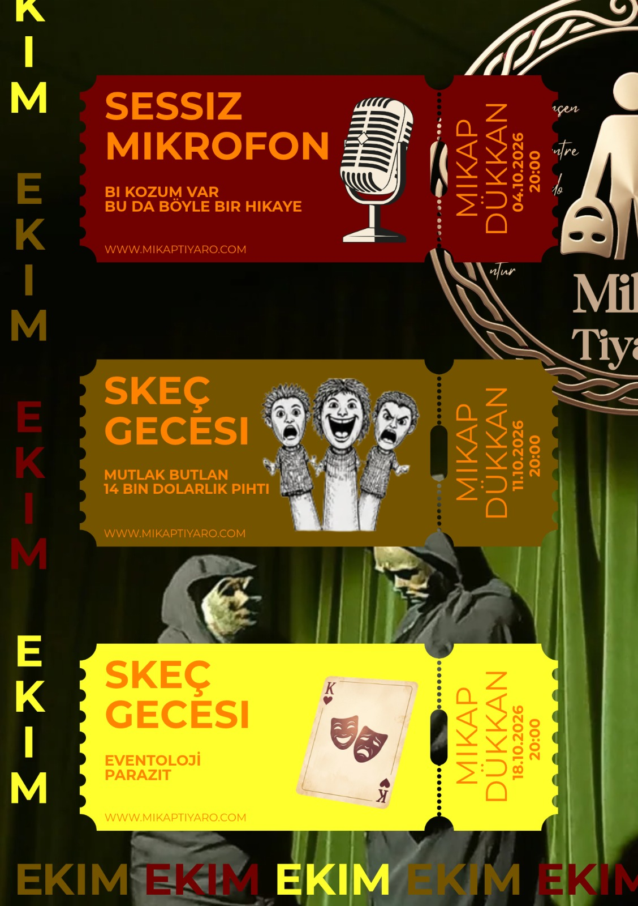

Mikap Tiyatro, Ekim ayında tiyatroseverleri kahkaha ve duygu dolu çok özel bir seçkiyle Mikap Dükkan sahnesinde bir araya getiriyor.
Programın açılış gecesinde temposu ve enerjisi yüksek iki ayrı stand-up performansı mikrofon başına geçerken,
devam eden haftalarda ise hayatın içinden absürt durumları işleyen üç komedi ve derinliğiyle iz bırakan bir dram olmak üzere toplam dört özgün skeç seyirciyle buluşuyor.
Ekim ayı boyunca her Pazar saat 20:00’de sergilenecek olan bu dopdolu gösterim takviminde yerinizi tükenmeden ayırtın, sahnenin samimi atmosferine ortak olun!
- 04 Ekim 2026 | 20:00 — Sessiz Mikrofon: Stand-up Gecesi (Bi Kozum Var & Bu Da Böyle Bir Hikaye)
- 11 Ekim 2026 | 20:00 — Skeç Gecesi: Mutlak Butlan & 14 Bin Dolarlık Pıhtı
- 18 Ekim 2026 | 20:00 — Skeç Gecesi: Eventoloji & Parazit
Yönetmen: Metin Taha Kaya
Oyuncular: Mikap Tiyatro Ekibi